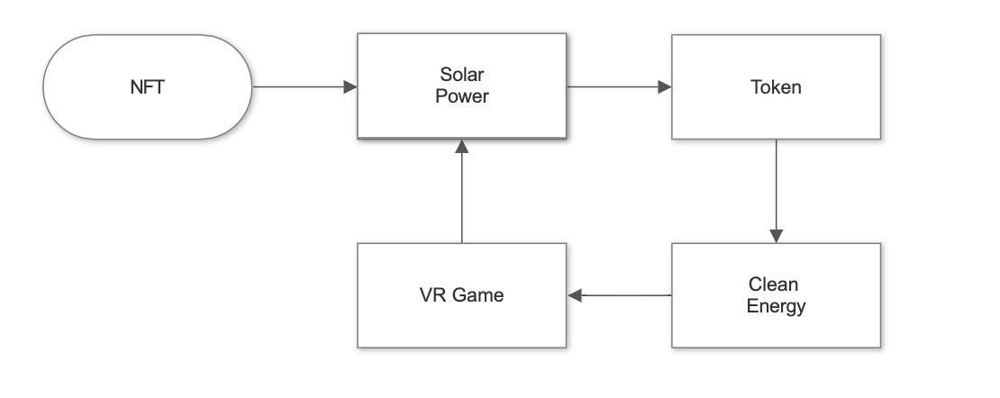

Project Idea
Overview
My IT project is based on revolutionising cryptocurrencies to find a solution for the world’s first clean energy cryptocurrency that provides a carbon negative footprint. Knowing that current mining methods are hazardous to our environment I am trying to change the way people see the web 3 space. In current times people are using Bitcoin, Ethereum as well as alt coins every day. Millions of people are purchasing millions of dollars of cryptocurrency every day and yet only a percentage of the population knows how it works.
Motivation
My motivation behind the project is to teach and help the environment move forward with the power of crypto. Ever since the boom of ‘NFT’s’ I was always intrigued and fascinated with the whole Web 3 space! NFT’s or Non-Fungible Tokens are a crypto asset on the blockchain with unique metadata which tells each one apart. Ever since getting into NFT’s and blockchains I have always seen criticism and hate how Web 3 is impacting the environment in negative ways. I’ve seen posts in the media as well as the news describing how Web 3 in general is a ‘scam’ or ‘killing the environment’ my motivation is to change the views of others as well as help the environment by powering the space with clean energy.
Description

My goal is to create the world’s first clean energy cryptocurrency that provides a carbon negative footprint. But how can we achieve that? The gaming industry is immensely large, gaming is larger than music and movie industries combined and is only growing my plan is to create a VR game located in the International Space Station made by unreal engine where the players can interact with each other and work on certain tasks around the station. This is basically the front-end where all the games, fun and interaction happen. The tasks in the game would revolve around collecting energy points which will be the token. By playing the game you will receive energy points which can be converted to the decentralised token itself. This will in turn help the token translate to a source to fund more solar harnessing technologies. The endless opportunities for programmers and coders needed to develop the blockchain and tokenomics as well as game developers. Not only limited to the front end but also it would create massive job opportunities in the solar industry. From fitting to developing and creating. Not only are we focusing on helping the environment, but we are also helping the economy by creating an influx of jobs. Not only we are using money towards the token to buy solar energy but when playing the game, there will be in game purchased uses will make as forms of customisable features which they can purchases using the games tokens which in turn will increase the price as well as the cap of the token. Ultimately tokens will be burnt making it deflationary which will decrease the tokens but in the long run increase the price. Promotions, adds and sponsors are revenue streams which will go towards hundreds of solar panels connected to various Powerwalls by Tesla the more game time people play equals more energy which can be produced. The use of Powerwalls is essential to the flow as we would need to store solar energy as not storing it would be a waste and could ultimately end up without the energy by overusing it. Due to the demand of solar, it will create many job opportunities as well as induce gamers to install solar for a healthier environment. It is estimated that Bitcoin uses electricity as an annual rate of 127 terawatt-hours. Which is more than the total power consumption of Argentina! and not only that but the carbon emissions exceed 65 megatons of carbon dioxide into the atmosphere making it a significant contributor to global air pollution sparking climate change. My project is significantly large and will take time, money and effort to achieve but once it does start, I believe a lot of other areas in IT will use the advantages of solar. Transforming the Web 3 into a healthy environment will ensure that we reap the benefits on the space.
Tools and Technologies
For this project to work it would need various software and hardware ranging from game development software ranging including VR compatibility. Also, the core token and blockchain would require special coding with the knowledge of blockchain development and coding the meta data for the NFT’s. Main hardware for this project would be the solar panels connecting to the powerwalls as this is the main purpose of the project. We would need hectares of open spaces for the installation of solar panels. There are many different software and hardware’s needed to make this project but not limited to the things I have stated.
Skills Required
As Web 3 is a growing community there are various of websites and Web 3 jobs which I have found in everyday browsing. Knowledge of Full stack development, VR compatible game designer, and writing blockchain are essential skills needed for the project. Knowledge of solar installation and solar programming is also another essential skill needed. Uses of native languages like JavaScript, react can help with the design of the website. For game design we would use programs like unreal engine and unity for VR. Job seeking websites like seek and indeed will help in hiring skilled workers to work on the project.
Outcome
If this project becomes successful it will not only create massive influx of jobs and help the economy but substantially make our home planet earth a healthier place to live. The focus of this project is to grow in the world of crypto while inventing new ways to use technology without harming our future generations. The fun aspect is there with the evolution on VR and technology, the environment friendly aspect is there to make sure we are not risking out future generations and most importantly we are shaping the upcoming generations with new technologies and new ways of life which will improve our way of living and conquer any problems we face as humans. It’s just the start.